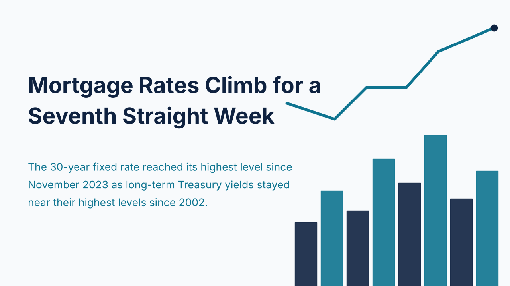
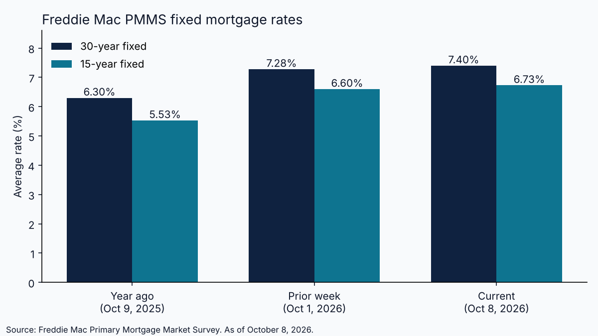

Mortgage Rates Climb for a Seventh Straight Week to 7.40%

The average 30-year fixed mortgage rate reached 7.40% in Freddie Mac's survey dated October 8, 2026, up from 7.28% a week earlier and 6.30% a year ago. It was the seventh consecutive weekly increase and the highest reading since November 2023, according to Freddie Mac and Associated Press coverage of the release. The 15-year fixed rate rose to 6.73% from 6.60%, against 5.53% a year earlier. From a late-February low of 5.98%, the 30-year rate has climbed 1.42 percentage points, which adds roughly $376 a month to the payment on a $400,000 loan.
The driver is the bond market. The 10-year Treasury yield closed at 5.28% on October 7, according to the Federal Reserve Bank of St. Louis (FRED), and traded near 5.29% on October 8, its highest level since 2002 per the Associated Press. The yield stood at 3.97% before the Iran war, the same report notes. Measured against the October 8 yield, the 30-year mortgage rate sits about 2.1 percentage points higher, a spread calculated here from the two published figures. Mortgage pricing is tracking Treasuries, and the Treasury market has repriced sharply.

Monetary policy has pushed in the same direction. On September 16, 2026, the Federal Open Market Committee raised its target range by a quarter point to 3.75% to 4.00% in a 12-0 vote, and its statement said inflation remains elevated. Demand is already responding: the Mortgage Bankers Association reported that mortgage applications fell for a fifth straight week, with refinance applications at their lowest since January 2025, and August existing-home sales slipped 2% to a 3.98 million annual pace.
For investors, the arithmetic is direct. Investor and DSCR loans are generally priced off the same Treasury benchmarks, so a seven-week climb in long-term yields compresses debt service coverage on deals that penciled a month or two ago. A property that cleared a 1.20 coverage threshold at a lower rate may now fall short, and lenders may require more equity or a lower loan-to-value to compensate. Underwriting assumptions set in August deserve a fresh look.
The next scheduled catalyst is the Federal Reserve's October 28 meeting, alongside each weekly Freddie Mac release. Until yields stabilize, investors and lenders evaluating deals this week should work from current rates rather than the levels of earlier in the quarter, and should confirm every figure with the lender actually quoting the loan.